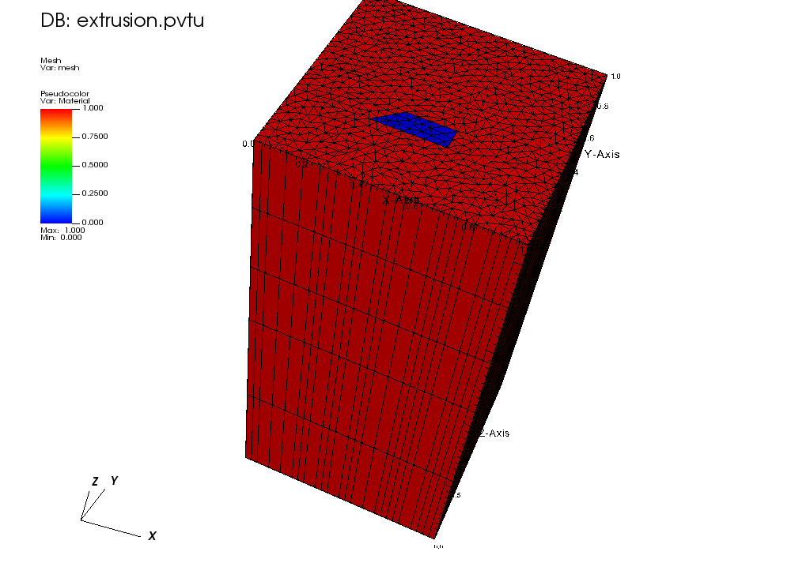
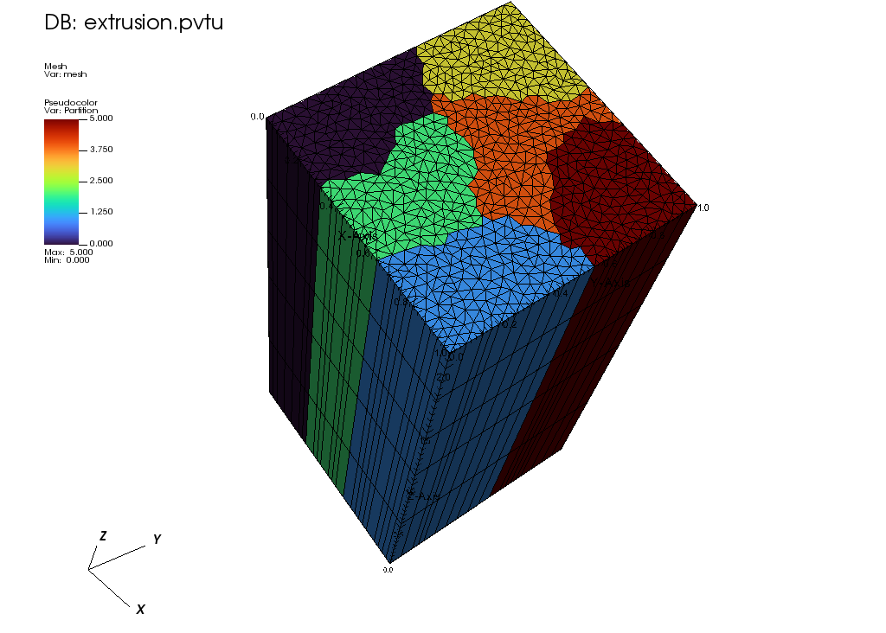

Reading a 2D .obj file and extrude it
Reading the Mesh
We start by reading a 2D obj file that we will extrude. (See a previous tutorial for reading 2D obj file). We inserts 2 layers between z=0 and z=1.1, followed by 3 layers, between z=1.1 and z=2.1.
Finally, we export the mesh to a VTU file.
The resulting mesh and material layout is shown below:

The resulting mesh and partition is shown below:

-- Setup the mesh
meshgen = mesh.ExtruderMeshGenerator.Create
({
inputs =
{
mesh.FromFileMeshGenerator.Create
({
filename="./tri_2mat_bc_1542.obj"
}),
},
layers = {{z=1.1, n=2}, {z=2.1, n=3}},
partitioner = mesh.PETScGraphPartitioner.Create({type="parmetis"})
})
mesh.MeshGenerator.Execute(meshgen)
mesh.ExportToPVTU("Extruded_mesh_only")
The complete input is below:
You can copy/paste the text below or look in the file named tutorials/meshing/extrusion.lua:
-- Setup the mesh
meshgen = mesh.ExtruderMeshGenerator.Create
({
inputs =
{
mesh.FromFileMeshGenerator.Create
({
filename="./tri_2mat_bc_1542.obj"
}),
},
layers = {{z=1.1, n=2}, {z=2.1, n=3}},
partitioner = mesh.PETScGraphPartitioner.Create({type="parmetis"})
})
mesh.MeshGenerator.Execute(meshgen)
mesh.ExportToPVTU("Extruded_mesh_only")